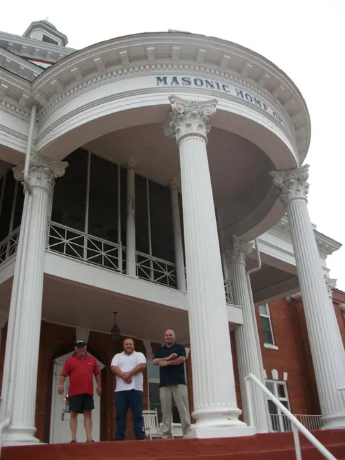
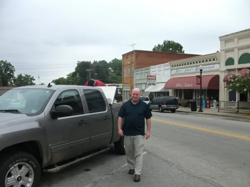
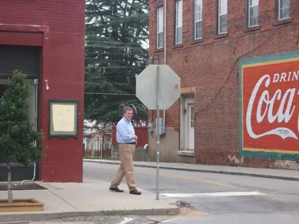
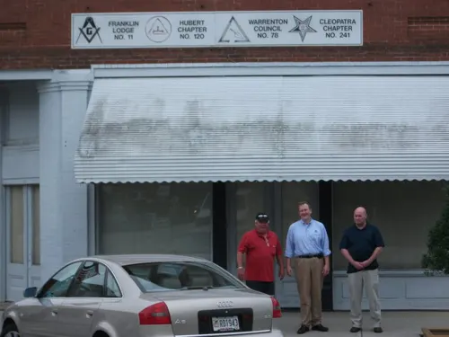
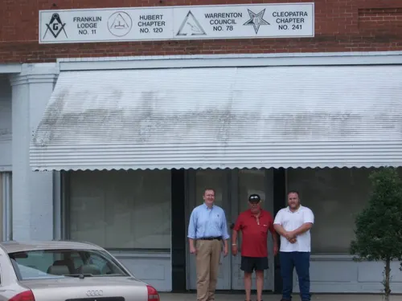
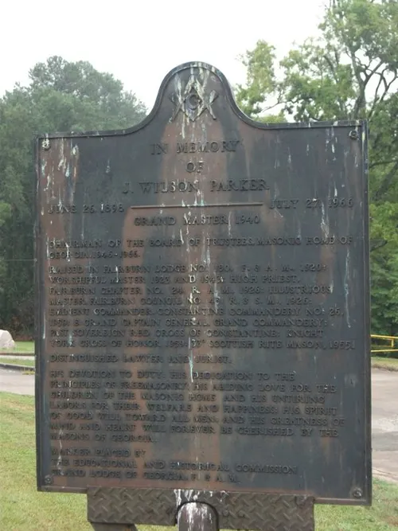
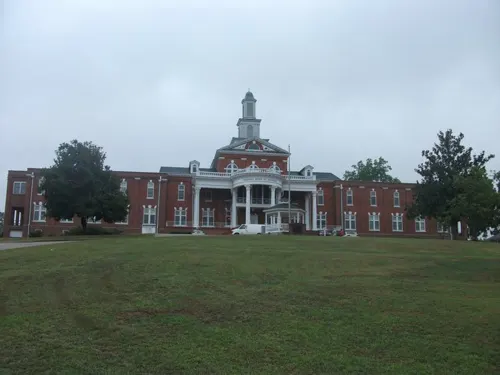
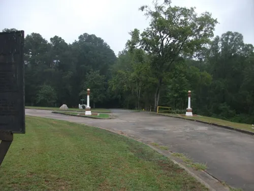
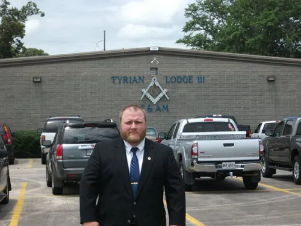
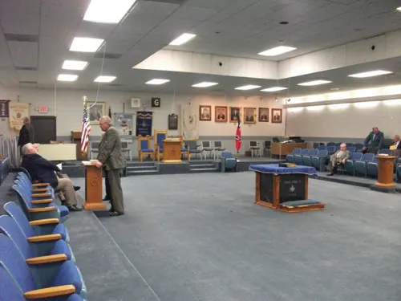

AMD meeting in Georgia
July 15, 2011 · Georgia (Franklin Lodge / Tyrian Lodge area)

On July 15, 2011 I traveled in Georgia for an Allied Masonic Degrees meeting, with stops along the way.
Photos cover a lodge building marked for Franklin Lodge No. 11 and related bodies, the Georgia Masonic Home, and Tyrian Lodge No. 111 — exterior and lodge room only; no ritual detail.


















